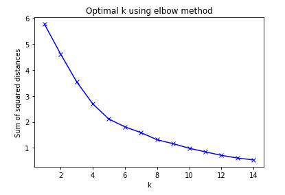

Crime Coded Venues
Look before you head to your
favorite venue
Published
on February 27, 2019 by Abhishek Bhansali
Table of
contents
1.
Introduction: Problem
2.
Data
2.1 Data Sources
2.2 Feature Selection
2.3 Data Cleaning
3.
Methodology
4.
Analysis
5.
Results and Discussion
6.
Conclusion
7.
References
1.
Introduction:
Problem
The
question that we are trying to answer here is: How safe are we when we visit
one of the popular venues in Boston, MA? The answer to this question can not
only help individuals secure their personal safety but also help them in being
better prepared to face an unforeseen unfortunate event. But beyond this
obvious benefit, the answers to this question can also help in identifying the
concentration of types of crimes around venues and this in turn can be utilized
by law enforcement agencies in evolving an effective strategy to curb crimes.
In addition the business owners of such venues can utilize the information to
devise better business strategies by exactly knowing what types of crimes occur
around them more frequently.
2. Data
2.1 Data
sources
To
start answering our question we need data for venues and crime incidents in
Boston. Crime incident data is provided by Boston Police Department (BPD). This
dataset is updated regularly and contains records which includes set of fields
focused on capturing the type of incident as well as when and where it
occurred. The data set has information of crime incidents from year 2015 to
date. As of February, 2019 the dataset contains 364,577 entries
The
venue data is aggregated by leveraging the Foursquare[1] location data. The explore end
point of Foursquare API, https://api.foursquare.com/v2/venues/explore returns a list of recommended venues near
the current location expressed as latitude and longitude for that location. The
return results are limited by the parameters in GET request such as radius
which governs the radius to search within (in meters) and limit
which governs the number of results
returned. In addition Foursquare Developer Account Type and Type of API call
(Regular or Premium) determine the daily call quota.Venue data is aggregated as
groups
field of json response.
2.2 Feature
Selection
The only relevant
features of crime dataset are the ones that describe the type of crime, the
place of occurrence, date and year when they occurred so we select 'offense_code_group'',
'street', 'occurred_on_date', 'year', 'lat', 'long'and drop rest of the features from the crime
incident data provided by BPD. Subsequently the selected features are renamed
as 'Offense',
'Street', 'Date', 'Year', 'Latitude', 'Longitude' and
a new Geo Spatial dataset of Boston's crime incidents bostonCIGeo_df
is created.
Similarly,
the relevant fields in the json response obtained from the explore endpoint of
Foursquare API are venue's name, category and its latitude, longitude which are
extracted to create Boston Venues dataset bv_df.
These two datasets
form the core data for further analysis. But before we can go any further we
need to clean this data and remove inconsistencies.
2.3 Data
Cleaning
It
is observed that geo-spatial dataset of Boston's crime incidents has null
values for Latitude and Longitude in many recorded incidents, but as part of
our analysis, that I describe shortly, such values are required in ascertaining
the vicinity of a reported incident to a given venue. Thus we have to discard
all such incidents were Latitude or Longitude information is missing in
geo-spatial dataset of Boston's crime incidents any attempt to substitute these
values using statistical models would wrongly classify the occurrence of such
incidents. There is at least a 5-10% information loss though in the process.
The
street feature in geo-spatial dataset of Boston's crime incidents although not
significant for analysis we intend to perform is shown on marker pop up of a
crime incident plotted on the map which has markers for both venues and crime
incidents. It is always useful when looking at a venue on the map so see what
incident has occurred in vicinity of such venue and at what place however many
of the reported incidents has no street information. It was decided to substitute
the string Latitude, Longitude in place of missing values.
The geo-spatial
dataset of Boston's crime incidents was limited to incidents that have occurred
in the year 2019 to make the analysis relevant to the current times. The
intention of the analysis is to show the current scenario devoid of bias that
any past data might create. A meaningful slice of the data should be selected
in accordance with the objectives of the analysis.
The data obtained
from Foursquare API contained duplicate values for venue names, this creates a
negative bias towards venues in our analysis in the sense that they gain more
weightage as being places in whose vicinity crimes are committed and thus the
first occurrence of the repeated venue name was accepted and others dropped.
3.
Methodology
The moment to
finally peek into the data has arrived, let's look at the distribution of
Latitude and Longitudes in geo-spatial dataset of Boston's crime incidents
using Scatter Plot and here you go - Surprise !!
The plot suggest
outliers all of certain specific value and somewhere near (0,0). On further
examination it is revealed as value of -1 for Latitude and Longitude in certain
incident records. Let's drop these records as before and re-examine the Scatter
Plot which now looks perfect
Next let us look at unique values
of the feature Offense in
Some of these
values such as 'Investigate Property', 'Property Found', 'Medical
Assistance' so on so forth are not actually
criminal actions and their inclusion creates a negative bias for venues in whose
vicinity they tend to get reported the records with such values for offense
need to be dropped and once that is done we are actually set to start our
analysis.
The analysis is
based on the examination of all reported incidents in certain specific preset
radius around a given venue. The specific preset chosen for present analysis is
500 mtrs. To find out if a reported incident falls within this specific preset
radius around the given venue we use Python's GeoPy[2]geopy.distance.distance
function to find the geodesic
distance between them given their latitude and longitudes
and in each case where the reported incident lies within this specific preset
radius a new record is added to our new dataset bvc_df
with following information Venue Name, Venue Category, Venue Latitude, Venue
Longitude and reported Offense. The resulting new dataset now has frequency as
well as crime type of all reported incidents in vicinity of a given venue for a
given specific radius around it.
This data set
could then be used to cluster venues based on the type of offenses that are
reported in its vicinity using machine learning algorithms. The K-Means
Clustering approach is best suited to cluster venues based on reported
incidents in their vicinity.
4. Analysis
The first step
before we could actually utilize our new dataset bvc_df for
K-Means Clustering is to convert the categorical variable Offense into
a form that is required by K-Means Clustering package using one hot encoding.
Next the dataset is grouped by venue names and a mean is obtained resulting in
dataset bvconehotgrp_df
The optimum value
for k is determined by observing the plot of Sum of squared distance against k
and looking for the value of while a perfect elbow does not occur the value of
k=8 appaears to the optimum

The labels so
obtained are appended to the dataset containing the probabilities of occurrence
of each offense in vicinity of a given venues and then finally merged with
Boston venues dataset to get a final data set
5.
Results and
discussion
To
understand the results let's look at the plots of average probabilities of
occurrence of a given offense in each cluster
On observing the
plots above we are able to identify the distribution of average probabilities
of offenses in a given a cluster of venues. The prominent offense types are
distinctly visible in most cases. It is important to pay attention to value of
mean probabilities of offenses types in the cluster. In some cases the
distribution is spread out but the mean values are small whereas in others the
distribution is more concentrated and the probabilities are high. It would be
beneficial to think of venues in clusters with low probabilities of offenses as
safer compared to the ones that have high probabilities. Even a couple of high
probabilities of offenses in a cluster would suggest that they are more unsafe
as compared to venues in other clusters where the distribution is spread out
but the average probabilities of offenses are low, though it is important to
qualitatively understand the offense type and its weightage. Say for example, a
small probability of an aggravated assault offense type is potentially more
than a considerable probability value of Liquor Violation. Identifying high
concertation of offense probabilities also is useful for law enforcement
agencies to concrete their efforts in tackling these offenses. Apart from this
the cluster of venues observed here are also found to be geographically
clustered when observed on a map, indicating a relation of offense types to the
geographical locations.
It would be
necessary to understand that we have considered the dataset which is has more
recent records. Now, sometimes it also useful to consider the data that is more
post dated as offenses at a given location also tend to also follow a pattern
in time, but the choice of time in selecting the records in crime incident
dataset depends on what one is trying to accomplish. In our cases we were
interested in most recent trends and therefore selected crime incidents that
occurred in recent past. The offense types that we considered important were
selected and others were dropped again this was an arbitrary choice. One can
limit this selection of offense types for instance if one is looking for only
more heinous crimes types the offense type feature would have fewer values.
Venue dataset too is limited by the account type used to access the API whereas
some information (nearly 5-10%) from crime incidents dataset is lost because of
the unavailability of latitude and longitude co-ordinates or their incorrect
values. The results obtained therefore must be looked at after accounting in
all such factors.
In the end though,
we could reasonably well answer the question that we posed before us as we
embarked on the analysis: How safe are we when we visit one of the popular
venues in the town? Merely now looking at the cluster in which this venue lies
we can easily identify the two most prominent offense types in vicinity of such
venue. We can further drill down to identify other offense types that are
expected by looking at the distribution of offense types of the cluster.
Somebody looking to start say a new restaurant in vicinity of a venue can now
be more mindful of how safe the neighborhood is and what is expected.
6. Conclusion
Let
us conclude the analysis by plotting the clustered venues on the map of Boston,
MA where different clusters of venues are color coded indicating the similarity
of the offences that are expected to occur in their vicinity. The marker for
each venue shows the probabilities of two most common offences that is expected
to occur around them based on average probabilities of crime incidents in the
cluster. The venues are overlayed on the crime map of Boston to give more
correct and exact idea of the offense that occurred in vicinity of the venue
along with its place and date of occurrence.
7. References
[1]:
Four Square API
[2]:
GeoPy Documentation
The
notebook can be accessed on nbviewer
and also from GitHub